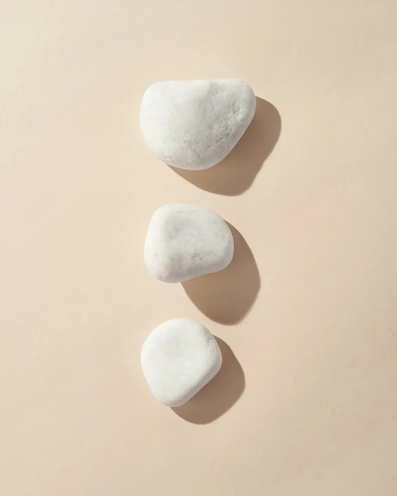
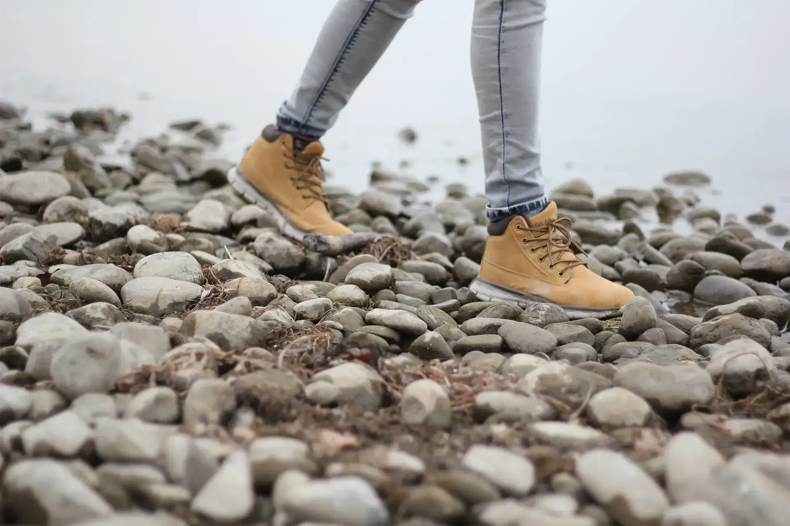
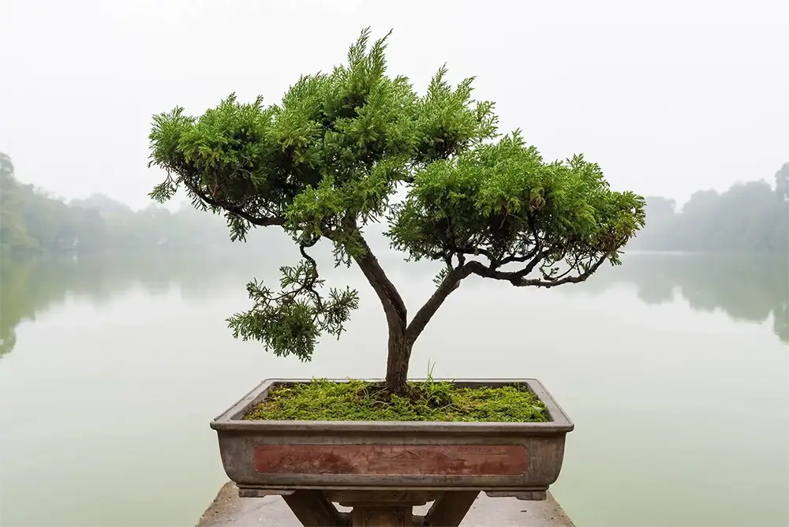

Stone, water, plants, hands, open ground — patience and steadiness, never luck. Cool, slightly desaturated. No chips, cards, dice, slot reels or money in editorial imagery. Never a recognizable face.